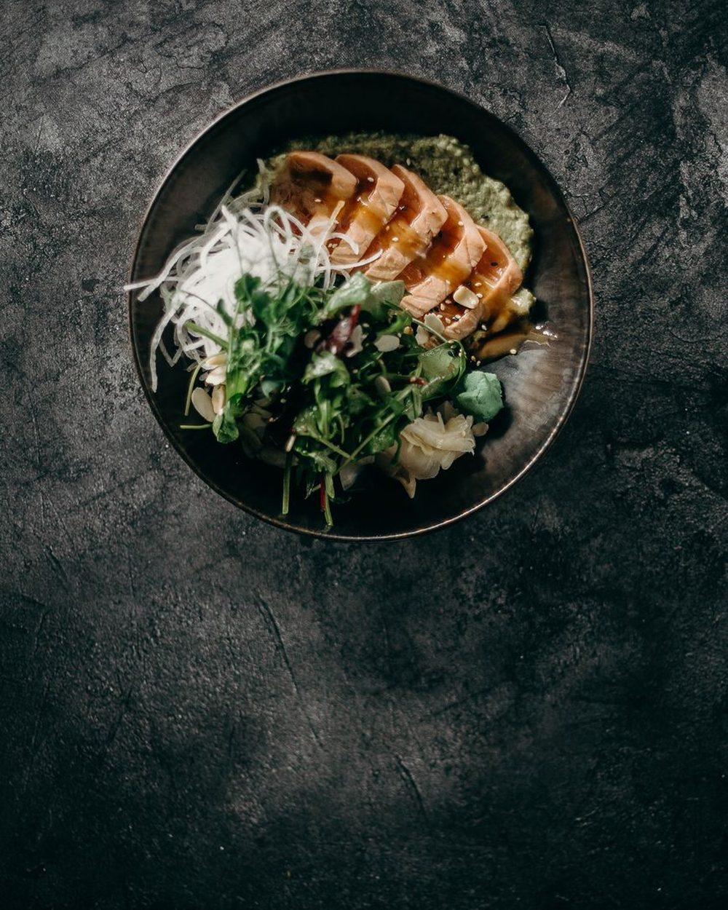
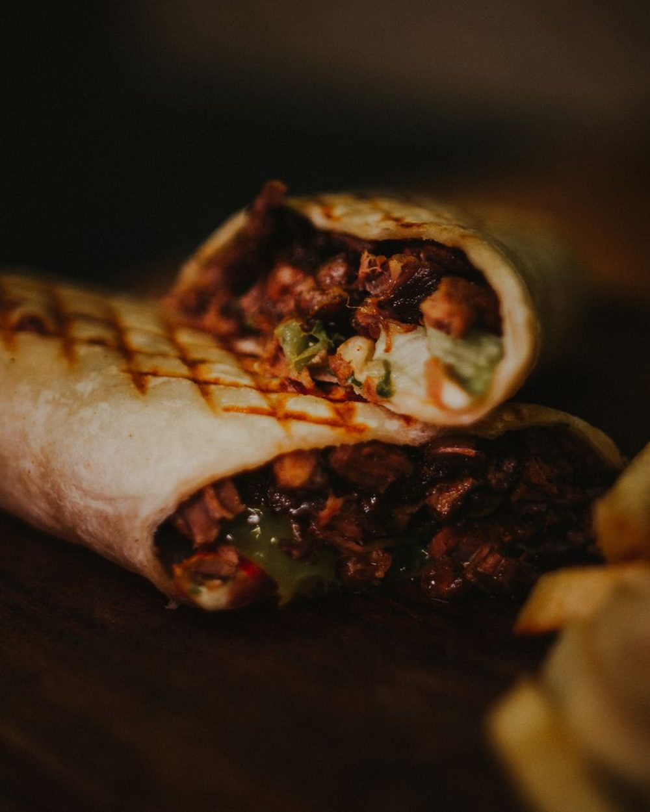
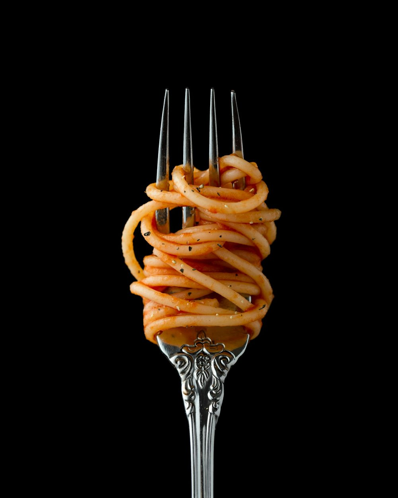

Signature
Poke bowl saumon
Riz, saumon, avocat, légumes croquants. Frais, coloré — jamais fade.
Un programme construit, calculé et vérifié — comme un instrument réglé pour un seul organisme : le tien.
Ton métier, ton rythme, ton appétit, tes goûts, tes contraintes. Chaque réponse est une donnée d'entrée — le point de départ d'un calcul qui n'existe que pour toi.
Calories et macros ajustées au gramme, selon une méthode issue de deux ans de programmes réels. Pas d'approximation, pas de copier-coller.
De vrais plats, gourmands et simples à cuisiner, montés autour de tes goûts — jusqu'à ta liste de courses, pensée pour que rien ne se perde.
Ton protocole complet, vérifié par Damien & Yoann, livré prêt à vivre : menus, quantités précises, liste de courses. Il ne reste qu'à commencer.
Un protocole Elysium, ce sont de vrais repas, en quantité — pensés pour que tu manges à ta faim tout en visant juste. Le contraire de la privation.
Je ne pensais pas qu'on allait autant manger.
Pas des barres ni des shakers. De vrais repas, en quantité — calibrés au gramme, pensés pour une vie réelle.

Riz, saumon, avocat, légumes croquants. Frais, coloré — jamais fade.

Protéine, féculent et légumes dans la tortilla. Rassasiant, carré.

Les glucides sont dosés, pas supprimés. Le confort reste au menu.
On ne se prive pas au réveil. La gourmandise est calibrée, pas sautée.
Construit, calculé, vérifié — pour toi, personne d'autre.
Démarrer l'analyse